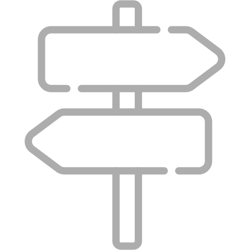

<!DOCTYPE html>
<html lang="th">
<head>
    <meta charset="UTF-8">
    <meta name="viewport" content="width=device-width, initial-scale=1.0">
    <title>PANUWAT PETROLEUM</title>
    <link rel="stylesheet" href="https://unpkg.com/leaflet@1.7.1/dist/leaflet.css" />
    <style>
        body {
            font-family: Arial, sans-serif;
        }

        /* ตั้งค่าขนาดของแผนที่และกรอบ */
        #map {
            height: 70vh; /* ความสูงของแผนที่ 70% ของหน้าจอ */
            width: 100%; /* ความกว้างเต็มจอ */
            margin: 0; /* Remove margin for full-width */
            border-radius: 10px; /* ทำให้ขอบของแผนที่มน */
        }

        .map-header {
            position: relative;
            top: 0;
            left: 0;
            background-color: white;
            width: 100%;
            padding: 10px;
            display: flex;
            align-items: center;
            justify-content: space-between;
            box-shadow: none; /* Remove shadow */
        }

        .map-header img {
            cursor: pointer;
            width: 18px; /* Set the same size for Back and Close icons */
        }

        .map-header h3 {
            margin: 0;
            font-weight: bold;
            flex-grow: 1;
            text-align: center;
            color: black; /* เปลี่ยนสีฟอนต์ให้เหมือนกัน */
            font-family: Arial, sans-serif; /* ฟอนต์เดียวกันกับโค้ดที่ให้มา */
        }

        /* Style for the close button */
        .close-button {
            width: 18px; /* Size of the close button */
            margin-right: 10px; /* Keep slight margin for spacing */
        }

        /* Footer section styling */
        .map-footer {
            position: fixed;
            bottom: 0;
            left: 0;
            right: 0;
            width: 100%; /* Full width to match the map */
            background-color: #f5f5f5;
            padding: 20px;
            border-radius: 20px 20px 0 0;
            box-shadow: 0 -4px 6px rgba(0, 0, 0, 0.1);
            display: flex;
            flex-direction: column;
            justify-content: center;
            align-items: center; /* Align items centrally */
            z-index: 999; /* Ensure footer stays on top of map */
            box-sizing: border-box; /* Ensure padding doesn't cause overflow */
            max-width: 100vw; /* Ensure it doesn't overflow beyond screen width */
            overflow: hidden; /* Prevent any overflow */
        }

        .search-container {
            position: relative;
            width: 100%; /* Ensure full width within parent */
            max-width: 500px;
            margin-bottom: 15px;
            display: flex;
            justify-content: center; /* Center the search bar */
        }

        .map-footer input {
            width: 80%; /* Adjust width to 80% for central alignment */
            padding: 10px 10px 10px 40px;
            border: none;
            border-radius: 30px;
            font-size: 16px;
            color: #888;
            background-color: #fff;
        }

        .search-icon {
            position: absolute;
            top: 50%;
            left: 25px;
            transform: translateY(-50%);
            width: 20px;
            height: 20px;
            cursor: pointer; /* เพิ่มให้คลิกได้ */
        }

        .footer-menu {
            display: flex;
            justify-content: space-around;
            width: 100%;
            margin-top: 10px;
            box-sizing: border-box;
            padding-left: 0; /* Remove padding to make it align perfectly */
        }

        .footer-menu button {
            background-color: transparent;
            border: none;
            cursor: pointer;
            display: flex;
            flex-direction: column;
            align-items: center;
            flex-grow: 1; /* Ensure buttons take equal space */
            max-width: 50%; /* Prevent buttons from overflowing the screen */
        }

        .footer-menu button img {
            width: 40px;
        }

        .footer-menu button span {
            margin-top: 5px;
            font-size: 14px;
        }

        .footer-menu button.active span {
            color: #fdd835; /* สีเหลืองสำหรับ Home */
        }

        .footer-menu button span.yellow {
            color: #fdd835; /* สีเหลืองสำหรับ Home */
        }

        .footer-menu button span.gray {
            color: #888888; /* สีเทาสำหรับ สาขาทั้งหมด */
        }

        /* Ensure the map content doesn't overlap with the footer */
        body {
            margin-bottom: 100px; /* Adds bottom margin to avoid map overlapping */
        }

        /* Add a higher z-index for the footer to ensure it always stays visible */
        .map-footer {
            z-index: 1000; /* Keeps footer tabs above the map */
        }

    </style>
</head>
<body>
    <!-- แผนที่ OpenStreetMap -->
    <div id="map"></div>

    <!-- ส่วน Footer -->
    <div class="map-footer">
        <div class="search-container">
            <input type="text" id="searchInput" placeholder="ค้นหาสาขา">
            
        </div>

        <!-- เมนู Footer -->
        <div class="footer-menu">
            <button class="active">
                
                <span class="yellow">Home</span>
            </button>
            <button onclick="window.location.href='gasmenu.html'"> <!-- เพิ่ม onclick -->
                
                <span class="gray">สาขาทั้งหมด</span>
            </button>
        </div>
    </div>

    <!-- ใส่ Leaflet.js -->
    <script src="https://unpkg.com/leaflet@1.7.1/dist/leaflet.js"></script>
    <script>
        // สร้างแผนที่และตั้งค่าพิกัดศูนย์กลาง
        var map = L.map('map').setView([13.736717, 100.523186], 14);

        // นำเข้าข้อมูลแผนที่จาก OpenStreetMap
        L.tileLayer('https://{s}.tile.openstreetmap.org/{z}/{x}/{y}.png', {
            attribution: '&copy; <a href="https://www.openstreetmap.org/copyright">OpenStreetMap</a> contributors'
        }).addTo(map);

        // เพิ่ม Marker ด้วยรูปไอคอน gas
        var gasIcon = L.icon({
            iconUrl: 'image/gas.png', // ใช้ไอคอน gas.png
            iconSize: [40, 40], // ขนาดของไอคอน
        });

        var markers = [
            { position: [13.962116165223168, 101.57781687871186], title: 'ห้างหุ้นส่วนจำกัด ภาณุวัฒน์ปิโตรเลียม สาขาสำนักงานใหญ่' },
            { position: [13.914958493778913, 101.59223060185236], title: 'ห้างหุ้นส่วนจำกัด ภาณุวัฒน์ปิโตรเลียม สาขา1' },
        ];

        markers.forEach(function(marker) {
            L.marker(marker.position, { icon: gasIcon }).addTo(map)
                .bindPopup(marker.title)
                .openPopup();
        });

        // ฟังก์ชันสำหรับค้นหาและนำไปที่หน้า detail.html หรือ detail1.html
        function searchBranch() {
            var input = document.getElementById('searchInput').value;
            if (input === 'ห้างหุ้นส่วนจำกัด ภาณุวัฒน์ปิโตรเลียม สาขาสำนักงานใหญ่') {
                window.location.href = 'detail.html';
            } else if (input === 'ห้างหุ้นส่วนจำกัด ภาณุวัฒน์ปิโตรเลียม สาขา1') {
                window.location.href = 'detail1.html';
            } else {
                alert('ไม่พบข้อมูล');
            }
        }
    </script>
</body>
</html>
